1.1 Monitorización en Windows con Sysmon
1. Introducción
Sysmon es una utilidad que pertenece al conjunto de herramientas Sysinternals (propiedad de Microsot) dirigidas a la administración de sistemas windows.
Sysmon se encarga de monitorizar la actividad del sistema operativo, grabando los eventos en un fichero de eventos del sistema para su posterior análisis, este fichero esta en ‘C:\Windows\System32\winevt\Logs‘ y se llama ‘Microsoft-Windows-Sysmon%4Operational.evtx‘.
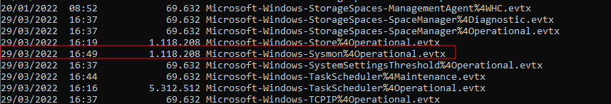
2. Instalación
En primer lugar, hay que descargarlo de su página oficial para instalarlo. Hay que descargar un fichero zip, y dentro de este, se tienen los ficheros para 32 y 64 bits.
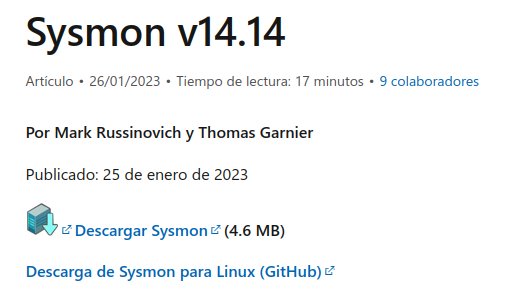
Una vez se pulsa en 'Download Sysmon', hay que descomprimir el archivo. Una vez se descomprime, hay que abrir una consola como administrador y acceder a la ruta donde se ha descomprimido Sysmon y ejecutar el siguiente comando:
C:\Software\Sysmon>Sysmon64.exe -accepteula -i
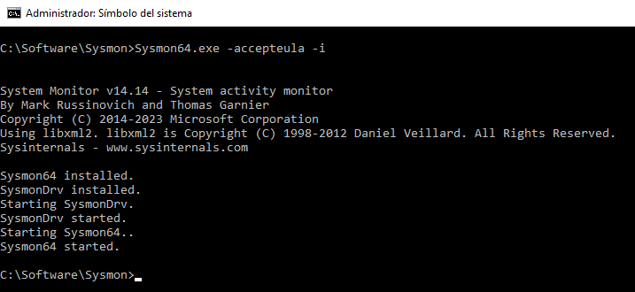
Una vez ejecutado el comando, se muestra como salida del mismo un resumen de lo módulos habilitados y los que no. Una vez instalado, ya está monitorizando el sistema operativo en función la opciones de configuración que vienen por defecto.
Si se tiene un fichero de configuración, se puede ejecutar del siguiente modo suponiendo que el fichero exista en C:\Windows.
C:\Software\Sysmon>Sysmon64.exe -accepteula -i C:\windows\config.xml
Por defecto la configuración de Sysmon no monitoriza la red. Para comprobar la configuración, hay que ejecutar el siguiente comando:
C:\Software\Sysmon>Sysmon64.exe -c
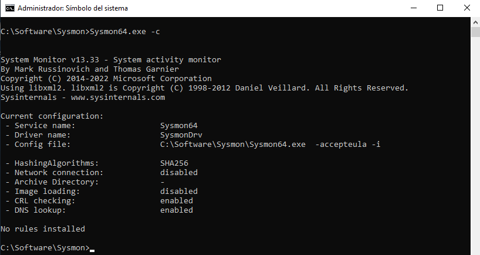
3. Configuración
Un problema que tiene esta utilidad es el tamaño del fichero donde guarda toda la información que va monitorizando, para especificar el tamaño del registro de eventos, hay que utilizar el comando ‘wevtutil’. Este comando permite instalar y desinstalar los manifiestos de eventos donde consultar los registros y hacer con ellos lo que se quiera. Para ejecutar ‘wevtutil’ y asignarle 20 MB, el comando es el siguiente:
C:\Software\Sysmon>wevtutil sl Microsoft-Windows-Sysmon/Operational /ms:20971520
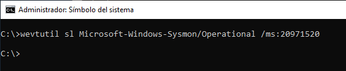
Se puede ver el esquema con información sobre configuración, mediante el siguiente comando:
C:\Software\Sysmon>Sysmon64.exe -? config
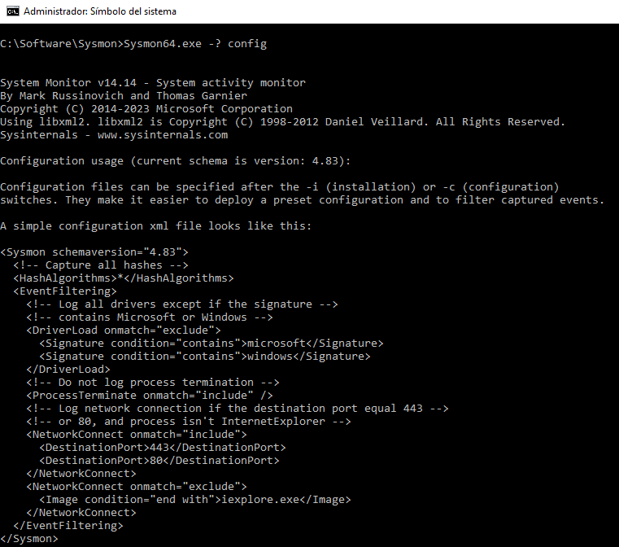
Se pueden tener preparados varios archivos de configuración e ir cambiándolos sin la necesidad de reiniciar el servicio. Si se quiere reiniciar la configuración a la que lleva por defecto el comando es:
C:\Software\Sysmon>Sysmon64.exe -c --
4. Cómo ver los eventos
Si se accede a la ruta «C:\Windows\system32\winevt\logs» se puede ver el fichero creado por sysmon, el cual se puede abrir con el «Visor de Eventos de sistema» y empezar a monitorizar la actividad del sistema.
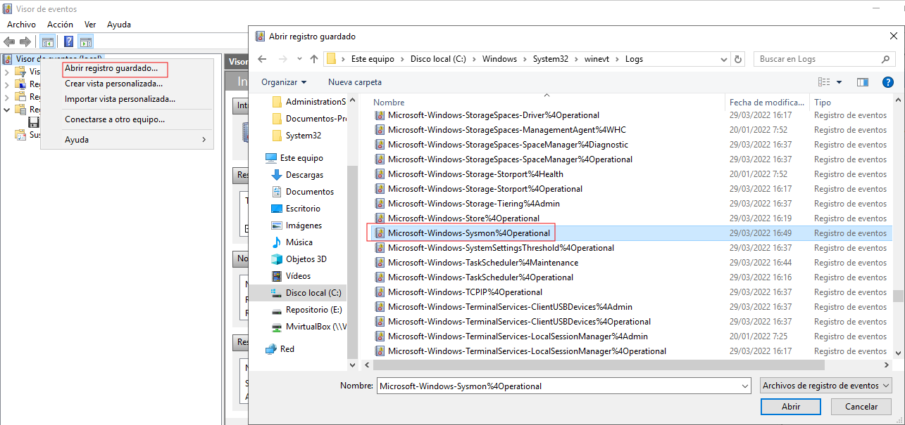
Una vez se carga el fichero, ya se pueden ver los eventos.
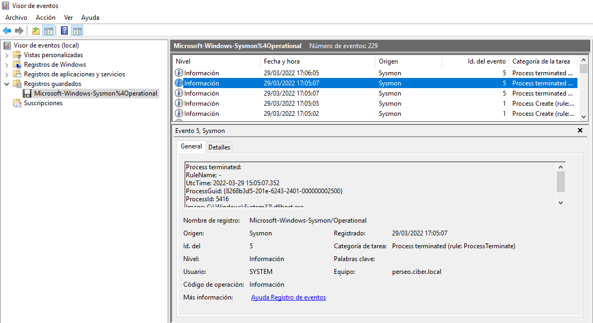
Con esta instalación, Sysmon trabajará con sus opciones por defecto, pero se puede configurar sysmon a través de un fichero de configuración xml, para poder afinarlo más y que muestre la información que se desee analizar.
4. Cargando un archivo de configuración
Se puede comenzar con un archivo de configuración de ejemplo:
Para cargar el fichero de configuración, hay que descargarlo en el directorio donde se tiene el ejecutable de Sysmon, y ejecutar el siguiente comando:
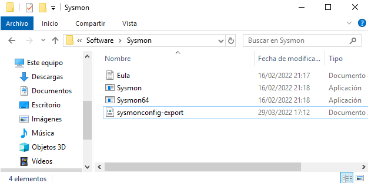
C:\Software\Sysmon>Sysmon64.exe -c sysmonconfig-export.xml
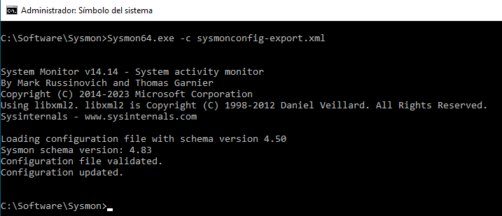
Si se quieren conocer las etiquetas que se pueden usar en cada uno de los eventos, se puede ver en el "schema", el comando es el siguiente:
C:\Software\Sysmon>Sysmon64.exe -s
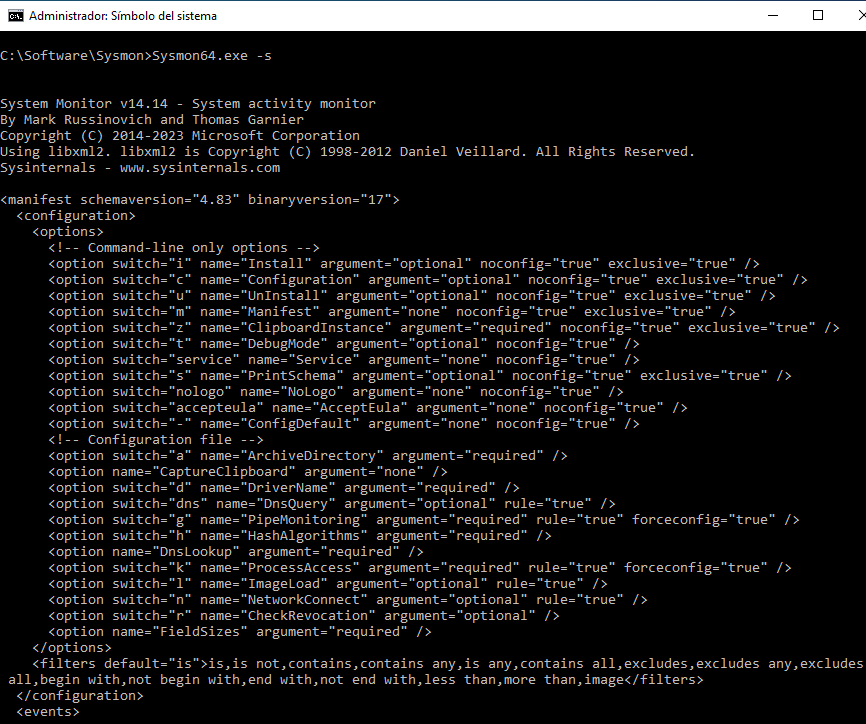
5. Programa de terceros para analizar eventos
Se puede usar algún programa para ayudar en la gestión de la información. Para ello, se tiene un programa llamado SysmonTools, que se puede encontrar en:
Hay que descargar el formato que corresponda a nuestra máquina, en este caso 64 bits.
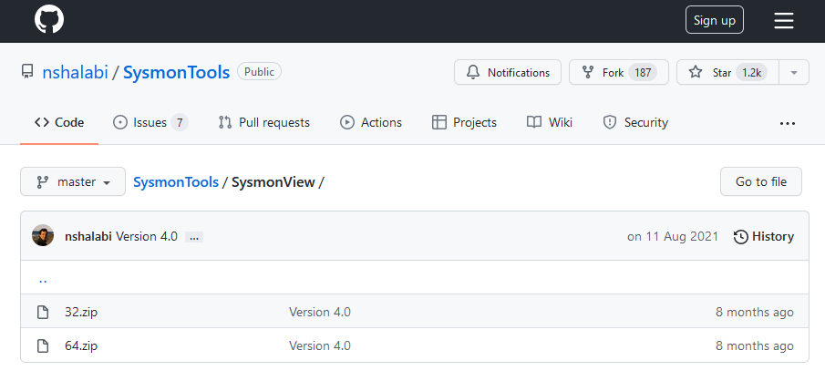
Una vez se ha realizado la descarga, hay que descomprimir el fichero y ya se podrá ejecutar el programa Sysmon View.
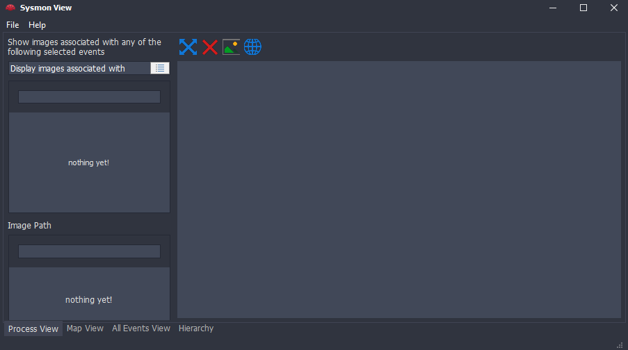
Antes de importar la información, en File > Preferences, se pueden añadir API de VirusTotal y IPStack.com, esta última para la geolocalización de los eventos.
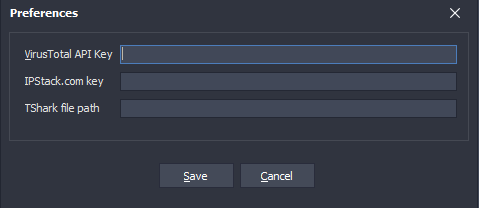
En el visor de eventos de Windows, visualizando los de Sysmon, en el panel de la derecha se pueden guardar todos los eventos como XML, para que posteriormente se puedan importara en Sysmon View.
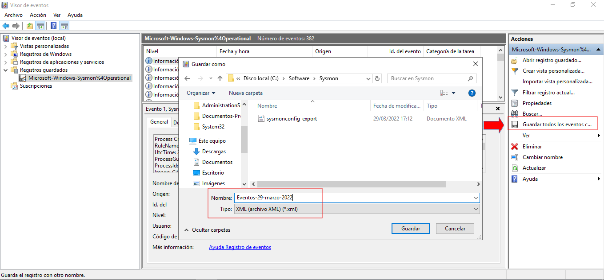
Una vez se ha descargado el fichero, ya se puede importar:
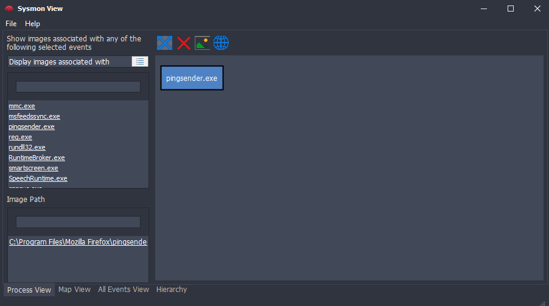
Obra publicada con Licencia Creative Commons Reconocimiento No comercial Compartir igual 4.0